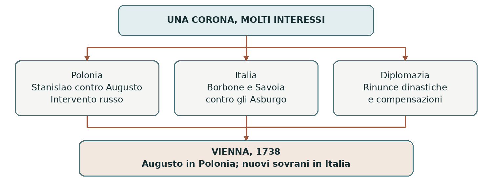

1733–1738 • Una corona contesa, un’Europa ridisegnata
La guerra di successione polacca
Una contesa per il trono polacco produsse cambiamenti soprattutto in Italia e in Lorena. Il nome della guerra indica la sua occasione immediata, ma non basta a spiegare i territori contesi e gli interessi delle potenze.
0. Domanda generatrice
Come poté una successione in Polonia cambiare i sovrani di Napoli e della Toscana?
In sintesi Le potenze collegarono la contesa polacca alle proprie rivalità e usarono altri territori come compensazione.
1. Il mondo precedente
La Confederazione polacco-lituana era una monarchia elettiva: alla morte del sovrano, la nobiltà
partecipava alla scelta del successore. Il re non disponeva quindi di un potere ereditario paragonabile a
quello dei Borbone francesi. Le divisioni tra gruppi nobiliari e l’intervento dei vicini rendevano la scelta
particolarmente conflittuale.
Dopo Utrecht l’Austria controllava ampi territori italiani. La Spagna borbonica aspirava a recuperarvi influenza; la Francia voleva contenere gli Asburgo e migliorare la propria posizione a est. Il Regno di Sardegna, governato dai Savoia, cercava di espandersi verso la Lombardia. La Russia era ormai una protagonista della politica europea.
In sintesi La monarchia elettiva polacca si trovava al centro delle ambizioni di Stati interessati anche ad altri teatri.
2. Le fratture
Nel 1733 morì Augusto II, re di Polonia ed elettore di Sassonia. Una parte della nobiltà elesse Stanislao
Leszczyński, già sovrano polacco e suocero di Luigi XV di Francia. Il figlio del re defunto, sostenuto da
Russia e Austria, fu eletto da un altro gruppo e assunse il nome di Augusto III.
L’intervento delle truppe russe favorì Augusto. La Francia sostenne Stanislao e si alleò con Spagna e Regno di Sardegna contro l’Austria. La crisi elettorale divenne così un conflitto internazionale: le operazioni più decisive per la sistemazione finale si svolsero in Renania e in Italia, oltre che in Polonia.
In sintesi Due elezioni rivali e l’intervento delle potenze trasformarono una crisi polacca in una guerra europea.
3. Attori, gruppi e conflitti
Dietro l’appoggio a un candidato agivano obiettivi diversi. La popolazione dei territori contesi non decideva i trasferimenti di sovranità.
| Attori | Obiettivi e interessi |
|---|---|
| Stanislao e Luigi XV | Il candidato cerca il trono polacco; la Francia difende prestigio e interessi territoriali. |
| Augusto III, Russia e Austria | Il sovrano sassone rivendica la corona; Russia e Austria vogliono un assetto favorevole in Polonia. |
| Spagna e Carlo di Borbone | La dinastia cerca nuovi domini italiani, soprattutto Napoli e Sicilia. |
| Carlo Emanuele III di Savoia | Il re di Sardegna punta a ingrandire i possedimenti continentali verso la Lombardia. |
In sintesi La causa dichiarata era l’elezione del re; le potenze combattevano anche per obiettivi propri.
4. Il processo storico
La contesa polacca e l’allargamento della guerra
L’appoggio francese non bastò a sostenere Stanislao contro le forze russe e sassoni. Nel 1734 la caduta di Danzica, dove egli si era rifugiato, segnò una svolta a favore di Augusto III. Il destino della corona fu così condizionato dalla forza militare e dall’intervento esterno, oltre che dalle scelte dei nobili polacchi.
Invece di concentrare tutte le risorse in Polonia, la Francia attaccò gli interessi asburgici sul Reno. In Italia l’alleanza borbonica e sabauda mise in difficoltà l’Austria. Il conflitto mostra come un fronte potesse servire a ottenere vantaggi da negoziare su un altro.
I Borbone nell’Italia meridionale
Tra il 1734 e il 1735 Carlo di Borbone, figlio di Filippo V di Spagna, conquistò Napoli e la Sicilia,
sottraendole agli Asburgo. Questi regni tornarono ad avere un sovrano residente nel Mezzogiorno, pur
restando legati alla rete dinastica borbonica. Carlo non governava semplicemente come un viceré spagnolo.
Per questo periodo è più preciso parlare di Regno di Napoli e Regno di Sicilia sotto lo stesso sovrano: il
nome ufficiale “Regno delle Due Sicilie” appartiene al 1816. Nel Nord Italia, intanto, i Savoia cercavano
guadagni territoriali ai danni della Lombardia austriaca.
Il compromesso di Vienna
I preliminari di pace del 1735 furono seguiti dal trattato di Vienna del 1738. Augusto III conservò la
corona polacca. Stanislao rinunciò al trono e ottenne a vita la Lorena, destinata alla Francia dopo la sua
morte, avvenuta nel 1766. La Francia perse quindi sul candidato, ma ottenne un vantaggio territoriale
futuro.
Il duca di Lorena Francesco Stefano, marito di Maria Teresa e genero dell’imperatore Carlo VI, fu
compensato con il Granducato di Toscana, dopo l’estinzione dei Medici nel 1737. Carlo di Borbone fu
riconosciuto re di Napoli e Sicilia; l’Austria ricevette Parma e Piacenza. Il Regno di Sardegna ottenne
territori lombardi, tra cui Novara e Tortona.
In sintesi La vittoria di Augusto in Polonia si accompagnò a compensazioni che modificarono l’Italia e prepararono l’annessione francese della Lorena.
Lo snodo decisivo
La pace non premiò soltanto chi aveva imposto il proprio candidato. La Francia accettò Augusto III e ottenne una futura espansione territoriale: il compromesso poteva separare prestigio dinastico e vantaggio politico.
5. Le fonti in dialogo
Leggere un trattato attraverso i trasferimenti di sovranità
Una fonte diplomatica come il trattato di Vienna del 1738 permette di ricostruire il compromesso. Qui le sue principali disposizioni sono presentate attraverso una ricostruzione storiografica, senza simulare una citazione del documento.
Contenuto — sintesi didattica: Augusto resta re in Polonia; Stanislao riceve la Lorena a vita; Francesco Stefano ottiene la Toscana; Carlo di Borbone conserva Napoli e Sicilia; Austria e Savoia ricevono compensazioni territoriali.
Interpretazione e limiti: La ricostruzione rende leggibile l’intreccio delle clausole, ma seleziona i contenuti. Un trattato stabilisce diritti riconosciuti dai governi: non dimostra il consenso delle popolazioni trasferite da un sovrano all’altro.
Domanda di lettura: Quali compensazioni riguardano una rinuncia personale e quali il rapporto di forza tra Stati?
Ricostruzione: Treccani, «Successione polacca, guerra di»
In sintesi Distinguiamo il trattato, fonte dell’epoca, dalla sintesi moderna usata per leggerne gli effetti.
6. Conseguenze e nuovo assetto
La Russia rafforzò la propria influenza in Polonia. La Francia preparò l’acquisizione della Lorena. In Italia il predominio austriaco fu ridimensionato dal ritorno di una dinastia borbonica a Napoli e in Sicilia, mentre in Toscana iniziò il governo lorenese.
I territori furono trattati come parti di un equilibrio dinastico, attraverso scambi che non coincidevano con i desideri degli abitanti. L’Italia restava divisa in Stati, ma i suoi governanti e i suoi rapporti di forza cambiarono sensibilmente.
In sintesi Il risultato principale fu una redistribuzione di territori e dinastie, non una trasformazione politica della monarchia polacca.
7. Conclusione
La successione polacca mostra la distanza tra occasione di una guerra e suoi risultati. La corona andò ad Augusto III, mentre la pace ridisegnò territori molto lontani dalla Polonia, secondo una logica di compensazioni.
Sintesi finale 1733: la morte di Augusto II apre due candidature rivali. Russia e Austria favoriscono Augusto III; la Francia sostiene Stanislao. Il conflitto si estende alla Renania e all’Italia. Vienna riconosce Augusto e distribuisce compensazioni. Borbone a Napoli e Sicilia; Lorena ai Francesi dopo Stanislao.
Per studiare e collegare
Coordinate essenziali
Polonia-Lituania, Renania, Lorena e penisola italiana. Guerra dal 1733; preliminari nel 1735; pace definitiva nel 1738.
Saperi irrinunciabili
1. La monarchia polacco-lituana era elettiva.
2. Augusto II morì nel 1733.
3. I rivali furono Stanislao Leszczyński e Augusto III.
4. La Francia sosteneva Stanislao; Russia e Austria Augusto.
5. Spagna e Regno di Sardegna combatterono contro l’Austria.
6. Carlo di Borbone conquistò Napoli e Sicilia nel 1734–1735.
7. Vienna riconobbe Augusto III re di Polonia nel 1738.
8. Stanislao ricevette la Lorena a vita, poi destinata alla Francia.
9. Francesco Stefano di Lorena ottenne la Toscana.
10. Austria e Savoia ricevettero compensazioni in Italia.
Mappa concettuale

La causa immediata e i principali risultati territoriali appartengono a spazi diversi.
Strumenti e attività
Linea del tempo ragionata
| Quando | Che cosa cambia |
|---|---|
| 1733 | Morte di Augusto II; elezioni rivali e guerra. |
| 1734 | Danzica cade; Carlo di Borbone conquista Napoli. |
| 1735 | Conquista borbonica della Sicilia; preliminari di pace. |
| 1737 | Estinzione dei Medici; Toscana a Francesco Stefano. |
| 1738 | Trattato di Vienna: sistemazione definitiva. |
| 1766 | Muore Stanislao; la Lorena passa alla Francia. |
Vocabolario essenziale
Monarchia elettiva. Sistema in cui un corpo politico sceglie il sovrano.
Compensazione. Vantaggio concesso in cambio di una rinuncia o per bilanciare un accordo.
Preliminari di pace. Intesa sulle condizioni principali prima del trattato definitivo.
Dinastia. Famiglia che trasmette o rivendica il potere sovrano.
Attività di comprensione
1. Distingui la causa immediata della guerra dagli interessi di Francia, Russia e Spagna.
2. Costruisci una tabella con territorio, sovrano precedente e nuovo sovrano.
3. Spiega perché il fallimento di Stanislao non corrispose a una sconfitta diplomatica totale della Francia.
Fonti e approfondimenti
Lezione di riferimento: «moderna.ppt», diapositiva 14. I collegamenti seguenti permettono di leggere la fonte e approfondire i passaggi centrali.
Treccani — Guerre di successione
Treccani — La guerra di successione polacca